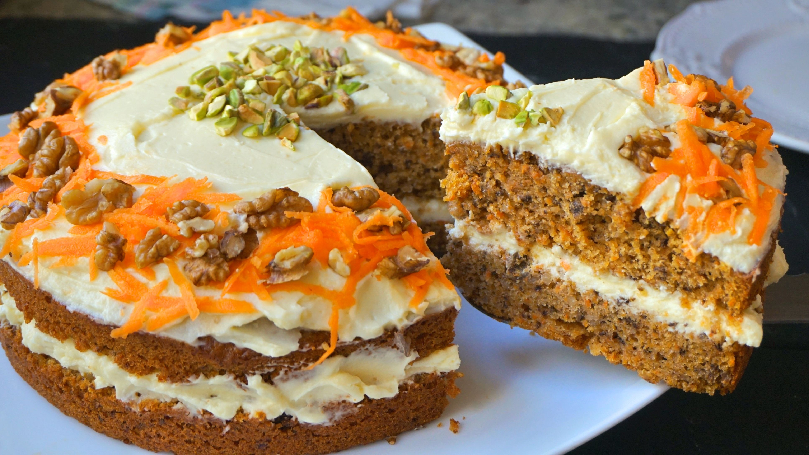

Bolo de Cenoura
AUTORA Ju Ferraz
Receita de bolo de cenoura é simples de preparar e leva cobertura feita com brigadeiro.
O bolo de cenoura é uma opção simples e prática para o café da manhã, lanche da tarde ou para uma ocasião
especial com famílias e amigos. Essa receita é feita no liquidificador e fica pronta em menos de 1 hora. É ideal
para quando você está com pouco tempo para cozinhar."